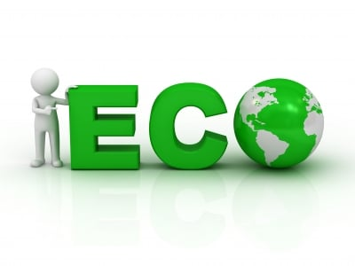
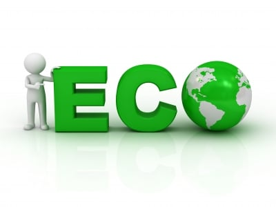

Bienvenido al Portal de Eventos Sostenibles
|
Es evidente que el desarrollo sostenible en la actualidad se enfrenta a un desequilibrio en
lo
que respecta a sus tres pilares principales - económico, social y ambiental.
Los 17 Objetivos de Desarrollo Sostenible de la Agenda 2030 de la ONU abarcan metas sociales, económicas y ambientales que buscan cerrar la brecha de género, erradicar el hambre, promocionar la acción climática o buscar la paz y la transparencia, entre otros propósitos. Cada pequeño paso cuenta. Aquí reunimos eventos que promueven un estilo de vida más responsable con el planeta: conferencias, talleres y actividades donde la sostenibilidad es la protagonista. Si buscas inspiración o quieres formar parte del cambio, este es tu lugar. Descubre iniciativas, conecta con personas comprometidas y encuentra el próximo evento que hará la diferencia. ¡El futuro es verde, y comienza hoy! 🌿♻️ |